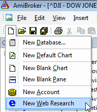
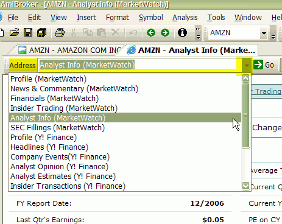
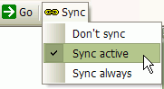
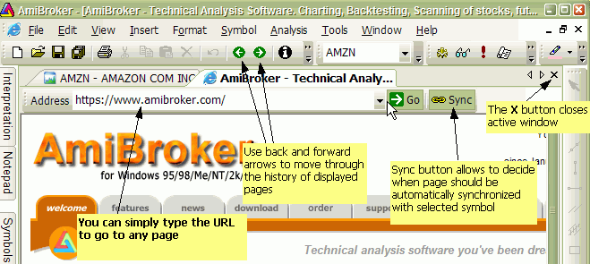
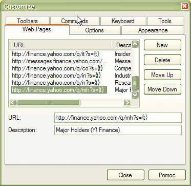

Web Research window allows you to view online news, research, profiles, statistics and all kinds of information related to the currently selected symbol available over the Internet (World Wide Web). Using Web Research instead of a plain web browser has a speed advantage because you don't need to type complicated/long addresses (URLs) each time you want to get desired information.
Web Research window, introduced in version 4.90, replaces and enhances previously available Profile window. Now it allows an unlimited number of user-definable web research (profile) pages, browsing to any web page (just type URL), tabbed browsing, opening multiple pages at once, selective auto-synchronization.
Web Research uses the Internet Explorer engine, so you can be sure that pages are rendered with the same quality you would get from a stand-alone browser.
Use File->New->Web Research menu to create a new web research window

To display any pre-defined web research page, simply click on the drop-down arrow in the Address combo box and select an item from the list. Once you do so, the web page relevant to the currently selected symbol will be automatically displayed.

Now you can specify if and when the displayed page should change automatically if you select a different symbol.

The Sync button allows you to decide when a page should be automatically synchronized with the currently selected symbol.
Web Research window operates in a way very similar to a stand-alone browser. To display any web page, just type the URL address into the "Address" field and press ENTER (RETURN) key. To navigate back and forth in the history use <- and -> buttons.

To close the currently displayed page, use the regular window close X button as shown in the picture above
In addition to Web Research pre-defined pages, you can define any number of your own places. To do so, use the Tools->Customize menu and the Web Pages tab.

To add a new place, press the New button, then type the URL template in the URL field and the web page description in the Description field.
The URL template is the web address that has parts that depend on the selected symbol. The URL template is parsed by AmiBroker to make the actual URL for the web page. For example, to see Yahoo's profiles page you can use the following URL template:
http://biz.yahoo.com/p/{t0}/{t}.html.
Symbols enclosed in brackets {} define fields that are evaluated at execution time. The {t0} symbol is evaluated to the first character of the ticker name and {t} is evaluated to the entire ticker name. So, if AAPL is selected, AmiBroker will generate the following URL from the above template:
http://biz.yahoo.com/p/a/aapl.html
Then AmiBroker uses its built-in web browser (Web Research window) to display the contents of the page.
Special Fields Encoding Scheme
As shown in the above example, a template URL can contain special fields that are substituted at run time by values corresponding to the currently selected symbol. The format of the special field is {x} where x describes the field type. Currently, there are three allowable field types: ticker symbol in original case {t}, ticker symbol in lowercase {s}, ticker symbol in UPPERCASE {S}, alias {a}, and Web ID {i}. You can specify those fields anywhere within the URL and AmiBroker will replace them with appropriate values entered in the Information window. You can also reference single characters of the ticker, alias, or Web ID. This is useful when a given website uses the first characters of, for example, a ticker to group HTML files (Yahoo Finance site does that), so you have files for tickers beginning with 'a' stored in subdirectory 'a'. To reference a single character of the field, use the second format style {xn} where x is the field type described above and n is the zero-based index of the character. So {a0} will evaluate to the first character of the alias string. To get the first two characters of a ticker, write simply {t0}{t1}. Note about the Web ID field: This new field in the Information window was added to handle situations when websites do not use ticker names for storing profile files. I found some sites that use their own numbering system, so they assign a unique number to each symbol. AmiBroker allows you to use this nonstandard coding for viewing profiles. All you have to do is enter the correct IDs in the Web ID field and use the appropriate template URL with the {i} keyword.
Pages Stored Locally
You may want to have all pages stored on your local hard disk. This has the advantage that profiles are accessible instantly, but they can take a significant amount of storage space and you will need to update them from time to time. To access locally stored files, use the following template URL (for example, C: denotes a drive): file://C:\the_folder_with_profile_files\{t}.html. You are not limited to HTML files, you can use simple TXT files instead. Then create (or download) the .html (or .txt) files for each symbol in the portfolio. These files should obey the following naming convention: <ticker>.html. So, for example, for APPLE (ticker AAPL), the profile should have the name AAPL.html (or AAPL.txt)
Web-Based Profiles
If you want to display the profiles from remote web pages, you will need to find out how they are accessible (the URL to the webpage) and how the data for different symbols are accessible. I will describe the problem using the example of Sharenet (www.sharenet.co.za) site that provides the data for companies listed on the Johannesburg Stock Exchange. Sharenet provides company information that is accessible at the following address (URL):
http://www.sharenet.co.za/free/free_company_na.phtml?code=JSECODE&scheme=default
The problem is that the database provided by Sharenet uses long ticker names and JSECODE is a short symbol code. For example, for the "Accord Technologies" company, the ticker in the Sharenet database is ACCORD, but the code is ACR. To solve the problem, we will need to use the Web ID field in the Symbol Information window. If you have the Sharenet database, just choose ACCORD from the ticker list, open the Symbol->Information window, and enter ACR into the Web ID edit box and click OK. Then enter the following URL template into the URL edit box:
http://www.sharenet.co.za/free/free_company_na.phtml?code={i}&scheme=default
To be 100% sure, please select the text above with your mouse. Then copy it to the clipboard (Edit->Copy, CTRL-C). Then switch to AmiBroker and click on the Profile URL edit box. Delete everything from it and press CTRL-V (this will paste the text). Type "Sharenet" into the Description field.
Please note that we have used the {i} special field in the template, which will be replaced by AmiBroker with the text entered in the Web ID field of the Symbol Information window. Now please select File->New->Web Research and pick "Sharenet" from the Address combo box. You should see the profile for the ACCORD company.
You can also delete any entry by selecting it from the list and pressing the Delete button. You can change the order in which pages appear in the Web Research address combo box using the Move Up and Move Down buttons (select the item first and then use the buttons).
Configuration data are stored in the webpages.cfg plain text file that holds any number of URL templates in the form of:
URLTemplate|Description
(each entry in a separate line)